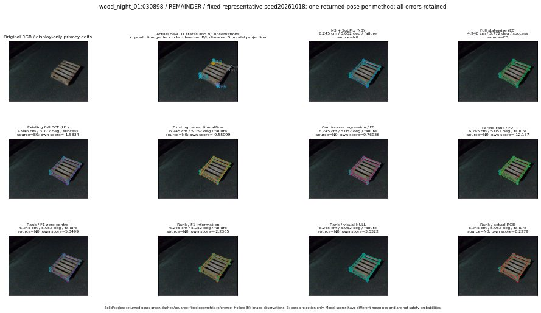

실선은 반환 자세, 초록 점선은 고정 기하 참조입니다. S는 영상 관측이 아닙니다. 점수는 모델별 의미가 다르며 보정된 안전 확률이 아닙니다. 개인정보 처리는 표시 사본에만 적용했습니다.
| 방법·seed | 위치 / 회전 / 공동성공 | 실제 출처 | 선택 후보 | 각 모델 자체 점수 |
|---|---|---|---|---|
| N0 | 6.245 cm / 5.052 deg / failure | N0 | N/A | N/A |
| E0 | 4.946 cm / 3.772 deg / success | E0 | N/A | N/A |
| E0_REGENERATED | 4.946 cm / 3.772 deg / success | E0 | E0_REGENERATED | N/A |
| POSEFIX_SUBPIX_PF_ANCHOR | 2.484 cm / 3.233 deg / success | OTHER | N/A | N/A |
| POSEFIX_SUBPIX_YOLO_ANCHOR | 2.54 cm / 3.263 deg / success | OTHER | N/A | N/A |
| D1_H1_MLP_s20261018 | 4.946 cm / 3.772 deg / success | E0 | E0_REGENERATED | -1.533402442932129 |
| D1_H1_MLP_s20261019 | 4.946 cm / 3.772 deg / success | E0 | E0_REGENERATED | -1.494584321975708 |
| D1_H1_MLP_s20261020 | 4.946 cm / 3.772 deg / success | E0 | E0_REGENERATED | -2.567478895187378 |
| D1_H1_PAIR_MLP_s20261018 | 6.245 cm / 5.052 deg / failure | N0 | N0 | -0.9649438858032227 |
| D1_H1_PAIR_MLP_s20261019 | 6.245 cm / 5.052 deg / failure | N0 | N0 | -1.2857574224472046 |
| D1_H1_PAIR_MLP_s20261020 | 6.245 cm / 5.052 deg / failure | N0 | N0 | -1.6593244075775146 |
| D1_H1_PAIR_ROLE_AFFINE_s20261018 | 6.245 cm / 5.052 deg / failure | N0 | N0 | -0.5509932637214661 |
| D1_H1_PAIR_ROLE_AFFINE_s20261019 | 4.946 cm / 3.772 deg / success | E0 | E0_REGENERATED | -0.6471468806266785 |
| D1_H1_PAIR_ROLE_AFFINE_s20261020 | 6.245 cm / 5.052 deg / failure | N0 | N0 | -0.28595277667045593 |
| R_CONT_F0_s20261018 | 6.245 cm / 5.052 deg / failure | N0 | N0 | 0.7693636417388916 |
| R_CONT_F0_s20261019 | 6.245 cm / 5.052 deg / failure | N0 | N0 | 0.9431024789810181 |
| R_CONT_F0_s20261020 | 4.946 cm / 3.772 deg / success | E0 | E0_REGENERATED | 0.8760550022125244 |
| R_ORDER_F0_s20261018 | 6.245 cm / 5.052 deg / failure | N0 | N0 | -12.156704902648926 |
| R_ORDER_F0_s20261019 | 6.245 cm / 5.052 deg / failure | N0 | N0 | -7.377385139465332 |
| R_ORDER_F0_s20261020 | 6.245 cm / 5.052 deg / failure | N0 | N0 | 4.423219680786133 |
| R_ORDER_F1_ZERO_s20261018 | 6.245 cm / 5.052 deg / failure | N0 | N0 | 5.34989070892334 |
| R_ORDER_F1_ZERO_s20261019 | 4.946 cm / 3.772 deg / success | E0 | E0_REGENERATED | -6.055673122406006 |
| R_ORDER_F1_ZERO_s20261020 | 6.245 cm / 5.052 deg / failure | N0 | N0 | 0.6346226930618286 |
| R_ORDER_F1_s20261018 | 6.245 cm / 5.052 deg / failure | N0 | N0 | -2.2365472316741943 |
| R_ORDER_F1_s20261019 | 6.245 cm / 5.052 deg / failure | N0 | N0 | 5.797746658325195 |
| R_ORDER_F1_s20261020 | 6.245 cm / 5.052 deg / failure | N0 | N0 | 1.1602952480316162 |
| V_ORDER_NULL_s20261018 | 6.245 cm / 5.052 deg / failure | N0 | N0 | 3.5322251319885254 |
| V_ORDER_NULL_s20261019 | 6.245 cm / 5.052 deg / failure | N0 | N0 | 2.066425085067749 |
| V_ORDER_NULL_s20261020 | 6.245 cm / 5.052 deg / failure | N0 | N0 | 2.7240054607391357 |
| V_ORDER_RGB_s20261018 | 6.245 cm / 5.052 deg / failure | N0 | N0 | 6.227912902832031 |
| V_ORDER_RGB_s20261019 | 6.245 cm / 5.052 deg / failure | N0 | N0 | 1.8591996431350708 |
| V_ORDER_RGB_s20261020 | 6.245 cm / 5.052 deg / failure | N0 | N0 | -6.046107769012451 |